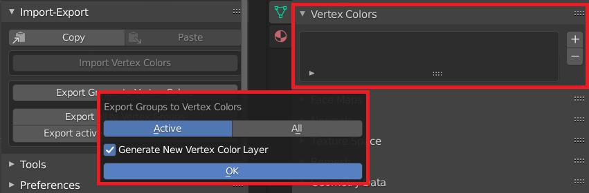
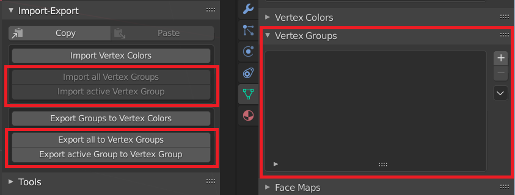
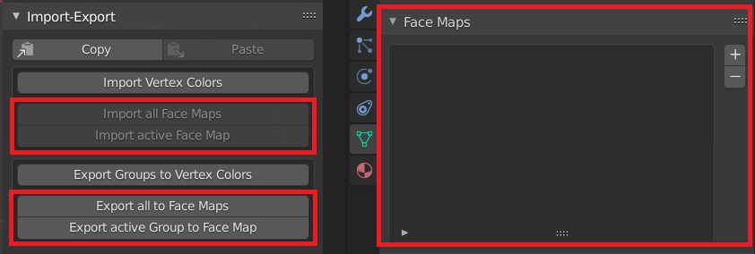

Import-Export

Copy to Clipboard
Copies Groups data to Clipboard in JSON format
Paste from Clipboard
Pastes Groups data from Clipboard and applies to the objects in the Edit Mode

Notice
Copy-Paste operation is available only for the same objects
Import-export Blender Vertex Colors
Available in all Zen Sets modes

-
Active
Imports-exports only active Group -
All
Imports-exports all Groups -
Generate New Vertex Color Layer
Creates new Vertex Color layer for every Zen Sets Group
Import-export Blender Vertex Groups
Available in Zen Sets Vert Sets, Vert Parts modes

Import-export Blender Face Maps
Available in Zen Sets Face Sets, Face Parts modes
